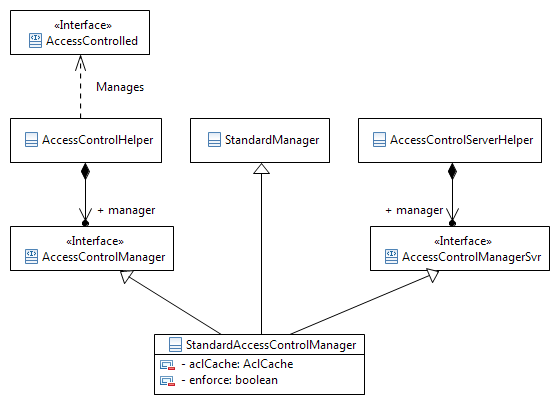

See: Description
| Interface | Description |
|---|---|
| AccessControlled |
Interface that all classes representing objects subject to access control
must implement.
|
| AccessControlManager |
The AccessControlManager interface contains the signature of the methods
supported by managers of the access control package.
|
| AccessControlManagerSvr |
AccessControlManagerSvr provides methods for access control services that can
only be invoked from classes running on the server.
|
| AdHocControlled |
Interface to be implemented by classes whose objects have their access
ruled by ad hoc ACLs.
|
| CustomSecurityLabelValueTranslator |
Interface that identifies methods for translating custom security label
values into internal and external formats.
|
| IdentityAccessControlled |
IdentityAccessControlled marks classes that require the
Modify Identity permission to modify one or more of the
identity attributes for instances of the class. |
| PolicyAccessControlled |
Interface to be implemented by classes whose objects have their access
ruled by policy ACLs.
|
| SecurityLabeled |
Interface to be implemented by classes whose objects may have security
labels marking the sensitivity of the object's information.
|
| Class | Description |
|---|---|
| _AccessControlConflictType | |
| _AccessControlSurrogate | |
| _AccessPermission | |
| _AccessPermissionType | |
| _AdHocAccessKey | |
| AccessControlConflictType |
Class that registers conflict types associated with Access Control Manager actions.
|
| AccessControlEvent |
Used to represent service level events occuring on an
AccessControlled object. |
| AccessControlHelper |
Helper class that provides easy access to the implementation of methods
defined by the AccessControlManager interface.
|
| AccessControlServerHelper |
Helper class that provides server invokable access control methods.
|
| AccessControlSurrogate |
The
AccessControlSurrogate acts as a stand-in for a persistable
object, to evaluate access rights for the information returned when a
database query is performed requesting specific attributes of an object
rather than a full persistable. |
| AccessPermission |
AccessPermission represents the access control permissions that may be
granted or denied.
|
| AccessPermissionType |
AccessPermissionType indicates whether access control permissions are
granted, denied or absolutely denied.
|
| AdHocAccessKey |
AdHocAccessKey is a specialization of
EnumeratedType to
provide localizable owner keys for ad hoc access control rule entries. |
| StandardAccessControlManager |
The StandardAccessControlManager provides the standard implementation of a manager for access control.
|
| UnrestrictedPrincipalEvaluator |
Abstract class that can be extended to customize who is restricted by a security label value and/or who can modify a
particular security label value.
|
| Exception | Description |
|---|---|
| AccessControlException |
Thrown when the access control service detects an unexpected error.
|
| MismatchedAccessControlRulesException |
Thrown in situations where a policy access control rule to be deleted does
not match the existing policy access control rule on the system.
|
| NotAuthorizedException |
Thrown in situations where a user lacks sufficient access rights to carry
out an action on a specific object or some other type of authorization
error occurs.
|
| OwnerLosingAccessException |
Thrown when the access control service detects that a change to security labels
will cause one or more Ownable objects to become inaccessible to their owners.
|
The access package provides the means to control an authenticated user's
access to business and system objects. The access control service supports the
definition of access control mechanisms and enforces the access checks made by
Windchill applications and services. The access control service supports two
forms of access control, discretionary access control and security labels. An
object is subject to access control if its type implements the AccessControlled interface and implements one or more of the
following interfaces: PolicyAccessControlled, AdHocControlled or SecurityLabeled. The AccessControlled interface is simply a
marker interface, without any methods.
Discretionary access control is enforced by access control lists (ACLs),
which associate principals to sets of access permissions granted, denied or
absolutely denied. Permissions are defined by the AccessPermission class. When a user attempts to perform an operation
on an object, the ACLs are evaluated to determine whether the required
permissions are granted to the user. Two types of ACLs can be associated with
an object: a policy ACL, generated from access control policy rules, and an ad
hoc ACL, generated from ad hoc access control rules. For policy-based access
control, access to types of objects is controlled by the association of an
object with an administrative domain. Administrative domains contain
access control policies that grant, deny or absolutely deny permissions to
principals for types of objects within the domain, optionally based on an
object's life cycle state. For ad hoc access control, access is granted to principals
for a specific object instance; explicit denial of access by rules that deny or
absolutely deny permissions is not allowed.
Access to sensitive information can be controlled by security labels and
authorization agreements. Site-specific security labels may be defined and
configured for a system. Security labels provide a means to mark and safeguard
sensitive information and a mechanism for determining a user's right to access
restricted data. Security labels act as a gate, prohibiting access by unauthorized
users. A user must be cleared for each security label value on an object to
gain access to the object. The user may be cleared by being an unrestricted
principal associated with the label value, or by being specified as an
authorized participant for an active agreement associated with the label value.
If a user has the appropriate clearance to access an object, the policy and ad
hoc ACLs are still used to determine what permissions the user has to perform
operations on the object. Refer to the wt.access.agreement package for
information about agreements.
Only a subset of the described access classes are supported. To determine if a class or one of its methods is part of the Supported API, consult the Javadoc for that class.
See the Windchill Specialized Administration Guide for additional information.
The AccessPolicyRule
class defines policy rules and the AdHocControlled
interface defines objects with ad hoc rules. Both implement the wt.access.AccessControlList interface, which associates a set of entries to an
ACL, and both contain an entry set attribute (defined by the wt.access.AclEntrySet class), which is a cache of the entries. An access
control rule entry is defined by the wt.access.WTAclEntry class.
Access Control Lists and Entries
To be associated to a policy ACL, an object must be of a type implementing
the PolicyAccessControlled
interface, which extends the DomainAdministered
interface (see the wt.admin package) and the AccessControlled interface. Domain
administered objects belong to a domain. Each domain has its own access control
policy that may contain many policy rules and ACLs.
Policy Access Control
Both the wt.access.PolicyAcl and the wt.access.AccessPolicyRule contain a selector that contains information about
the domain, type and state they are associated with. They also contain a cached
set of entries, each entry representing a specific mapping between a principal
(that is, a user, a group, or an organization; see the wt.org package),
or all except a principal, and a set of permissions. Policy rule entries may
also contain a pseudo role or a dynamic role as the principal. The pseudo roles
OWNER and ALL are symbolic representations of the
owner of an object and the group of all users, respectively. A dynamic role
(WTRolePrincipal) is a symbolic representation of a context team
group. Policy rule entries for all except a principal cannot specify a pseudo
role. An entry for all except a user is treated as an entry for a group whose
members are all users except the Administrator user and the specified user. An
entry for all except a group, dynamic role, or organization is treated as an
entry for a group whose members are all users except the Administrator user and
users in the specified group, dynamic role, or organization. The difference between
the policy ACL and the rule is that an ACL is derived from all of the rules
that apply to a domain, type and state. Applicable rules include those
inherited from ancestor domains and types. When the policy rules are merged to
create the ACL, any entries specifying permissions for a dynamic role are
resolved to the context team group representing the role, within the context of
the domain associated with the ACL. Policy ACLs are created on demand and, for
performance reasons, stored persistently in the database and in a server cache.
Every object type that implements the AdHocControlled
interface holds an ACL that is specific to the object, as shown in the figure
below.
Ad Hoc Access Control
If an object is both PolicyAccessControlled
and AdHocControlled, then
both the policy and the ad hoc ACLs determine its access, in an additive
manner. Ad hoc ACLs associate principals to a set of permissions granting
access, granting additional permissions beyond those defined by policies. If
the ad hoc ACL grants a permission that is denied in the policy ACL, the ad hoc
rule supersedes the policy rule and the access right is granted. If the ad hoc
ACL grants a permission that is absolutely denied in the policy ACL, the ad hoc
rule does not supersede the policy rule and the access right is denied. In the
same way as the policy ACL, the ad hoc ACL also contains a cached set of
entries. The ad hoc entries cannot contain a pseudo role or a dynamic role as
the principal.
Although ACLs can map only principals to permissions, an ad hoc ACL
specification (represented by the wt.access.AdHocAclSpec class) may
also map team roles to permissions. Ad hoc access control rules can be
generated from the ad hoc specification by resolving the roles into principals.
Depending on the role to principal mapping used to resolve the roles (see the
wt.team package), the same specification may generate many different ad
hoc ACLs.
If an object is wt.fc.adminlock.AdministrativelyLockable, then the
set of permissions granted by the policy and ad hoc ACLs may be filtered down to
a smaller set of permissions (see the wt.fc.adminlock package for
further details) when the object is administratively locked. The permissions
that are allowed for administratively locked objects are defined in the wt.fc.adminlock.AdministrativeLockType.access.ProductDesignPkg
property. If the property is not defined, only Read, Download,
and Change Permissions
permissions are allowed on administratively locked objects. Users having Administrative permission automatically
override any administrative lock on an object and do not have their permissions
filtered.
Every object that implements the SecurityLabeled
interface has a set of security labels, optionally defined for a site, as shown
in the figure below.
Security Labels
The securityLabels
attribute is a server calculated attribute (SCA). A string representation of
the set of site-defined security labels and their values for an object is
maintained in the attribute. The initial value for each of the security labels
and for the security labels attribute representing the set of labels is null,
which indicates that there are no restrictions. Each label in the set appears
as a separate attribute within a type instance. The security labels are stored
in the attribute using a version number followed by a comma separated list of
non-localized label name and value pairs. If a label value is null, its label
name and value pair are omitted from the string.
The functionality of the access control service is represented by the AccessControlManager (accessible through the AccessControlHelper) and the AccessControlManagerSvr (accessible through the AccessControlServerHelper).
StandardAccessControlManager defines the access control
enforcement, access control policy, ad hoc access and security labels
functionality. For enforcement, the most important methods are the checkAccess
methods, which take a permission and an object or a collection of objects as
parameters and throw a NotAuthorizedException
if access is not granted to the current principal.

Access Control Manager
When determining if a principal can access an object, the access control
manager first checks to see if access control enforcement is enabled and if so
whether the object is a type that is access controlled. If access control is
not enforced or does not apply to the object, access is granted. Otherwise, the
manager checks policy and ad hoc access control lists (ACLs) to see if the
principal has the necessary access control permissions. If the object is policy
access controlled, the policy ACL is generated (or retrieved if it already
exists) and the ACL is evaluated. If the object is not policy access controlled
or access is not granted by the policy ACL, the object is checked to see if it
is ad hoc controlled. If it is and has an ad hoc ACL, the ACL is evaluated. If
the desired access control permissions are granted and not absolutely denied by
a policy ACL, the object is checked to see if it is administratively lockable.
If it is and the user does not have Administrative permission and administrative
lock enforcement is enabled for the object's AdministrativeLockType,
then the system applies the permission filter for that lock type. If the
desired access control permissions are still granted and security labels are
enabled, then the system checks to see if the principal is authorized for all
security labels on the object, to determine if access is granted or denied. If
the principal is not an authorized participant for a security label value, the
system checks to see if the principal is authorized for that value by one or
more active agreements. If an appropriate agreement is in effect and the
principal is also authorized for the remaining security labels, access is
granted. Otherwise, access is denied. The principal must have the necessary
access control permissions and be cleared for all enabled security labels for
access to be granted.
The access control manager emits the following events:
SecurityLabeled
object changes. NotAuthorizedException.
The event is used for security auditing. The access control manager listens for the following events:
AdHocControlled object is created,
the manager persists any ad hoc access control entries associated with the
object. When a SecurityLabeled
object is created and security labels are configured for the system, the
manager checks whether there are any changes to the security labels for
the object. If so, the manager throws an exception if the object resides
in a personal cabinet at the end of the transaction and the changes would
cause the cabinet owner to lose access. When an AdHocAclSpec is created, the
manager ensures that the specification contains at least one role. AdHocControlled object is created,
the manager clears any ad hoc ACLs that may have been copied from another
object, if no ad hoc access control rules were created for the object. WTPrincipal object is deleted, the
manager checks whether there are any access policy rule entries for all
except the principal. If so, the manager throws an exception to veto the
deletion. SecurityLabeled object is updated
and security labels are configured for the system, the manager checks
whether there are any changes to the security labels for the object. If
so, the manager throws an exception if the object resides in a personal
cabinet at the end of the transaction and the changes would cause the
cabinet owner to lose access. SecurityLabeled
and Notifiable object
is checked in and security labels are configured for the system, the
manager checks to see whether the security labels on the working copy of
the checked out object are different than the security labels on the
original version. If the security labels are different, the change is
contributed to the ModifySecurityLabelsSummaryEvent.
AuthorizationAgreement used in the
security labels configuration. If so, the manager throws an exception to
veto the deletion.AuthorizationAgreement used in the
security labels configuration. If so, the manager throws an exception to
veto the rename.SecurityLabeled and Notifiable object is checked in and
security labels are configured for the system, the manager checks to see
whether the security labels on the working copy of the checked out object
are different than the security labels on the original version. If the
security labels are different, the change is contributed to the ModifySecurityLabelsSummaryEvent.